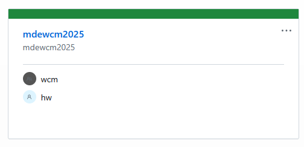

AI <<
Previous Next >> Topic1
Topics
Github Classeom hw and wcm project 設置: hw 為各學員作業倉儲, wcm 為各組協同倉儲.

Topic1: 可攜環境與 Github
可攜環境可以讓參與協同的每一位成員使用相同版本的工具套件, 包括 Git, Python, Putty, VSCode, Sharex, wscite 以及 Wink.
Github 則用來儲存個別學員與協同分組的產品設計內容, 因為倉儲中帶有內容管理系統, 每一位學員在進行各項階段性設計工程時, 都可以記錄詳細歷程, 也能利用個人及分組網頁展示內容, 其目的除了讓其他學員可以了解各階段提交的進度外, 也能透過互助合作的模式解決所面臨的問題.
Topic2: WWW 全球資訊網
全球資訊網（World Wide Web，簡稱 WWW）透過網際網路提供文件與各種多媒體資源的存取. 這些文件和資源通過超文本連結（Hypertext Links）互相連接, 並使用超文本傳輸協定（HTTP）進行傳輸. 全球資訊網的出現和普及大舉改變了人類獲取資訊和進行交流的方式, 使得資訊可以在全球範圍內迅速且方便地傳播, 從而促進了知識共享、商業活動及社會進步. 其重要性分別為:
- 資訊獲取：全球資訊網為現代人提供了方便快捷的資訊獲取方式, 幾乎所有類型的資訊都可以在網上找到.
- 交流與合作：全球資訊網促進了全球範圍內的交流與合作, 無論是個人或組織之間, 都可以通過網路進行溝通與協同合作.
- 電子商務：全球資訊網是電子商務的基礎, 為企業和消費者提供了一個方便且有效率的交易平台.
- 教育與學習：全球資訊網提供了豐富的教育資源與線上學習平台, 使教育得以更加普及和靈活.
- 娛樂與媒體：網路為現代人提供了豐富的娛樂內容和媒體資源, 如影片、音樂、互動遊戲等.
Topic3: 作業 - Nginx 與 Reeborg
Nginx 是一套高效、輕量的開源 HTTP 伺服器, 其事件驅動架構可高效處理大量的並發連接, 因此應用於許多高流量網站.
Reeborg 則是一套教育工具, 旨在幫助初學者學習程式設計概念和邏輯思維. Reeborg 是一個虛擬的機器人, 學習者可以通過編寫程式來控制它的行動, 完成各種任務和挑戰. Reeborg 支援 Python 和 JavaScript 程式語言, 並提供互動式 Web 界面, 學習者可以直接在瀏覽器中編寫和執行程式.
https_server_py.7z (利用 Python 伺服同目錄的 index.html)
Topic4: 期中專案 - Copilot 與 Reeborg
Copilot 是由 GitHub 與 OpenAI 合作開發的人工智慧程式碼助手工具. 它利用機器學習技術, 從大量的開源程式碼及自然語言處理模型中學習, 可在開發者編寫程式時提供即時的建議和自動補全功能. Copilot 能夠理解上下文, 並根據開發者的程式風格及需求生成相關的程式片段, 進而提高開發效率, 減少重複性工作, 並幫助解決程式編寫過程中的各種挑戰. Copilot 支援多種程式語言和框架, 是現代軟體開發過程中功能強大的輔助工具.
Topic5: 期末專案 - Reeborg 與 cmsimde
cmsimde 網際內容管理系統是一套簡單的網站內容管理系統. 利用 Python 及 Flask 編寫的 cmsimde 其動態網站的內容存在 config/content.htm 檔案中, 編輯時利用 H1, H2 與 H3 標題進行分頁, 一般並不建議各頁面使用重複內容, 動態網站的資料轉為靜態網站內容時, 會透過分頁將各頁內容存在 content 目錄中. 若動態網站中有重複標題的頁面, 則在轉為靜態網站時, 系統會自動在各頁面標題冠上 -1、-2、-3 等尾數進行辨別.
HTML, CSS and Javascript
ECMAScript 5 教學
2015 Javascript Object Programming (local download)
2015 JavaScript Quick Syntax Reference (local download)
2015 Pro Javascript Techniques (local download)
2016 Beyond JQuery (local download)
2023 The Absolute Beginner's Guide to HTML and CSS (local download)
2023 Creating Responsive Websites Using HTML5 and CSS3 (local download)
AI <<
Previous Next >> Topic1